Independence Palace - A Place To Keep A Part Of Saigon's History
If you have the opportunity to travel to Saigon, do not miss the historical site of the Independence Palace. This is a place bearing the heroic mark of our nation and also a place of pride of our people. Let's explore the Independence Palace with VNTRIP.VN!
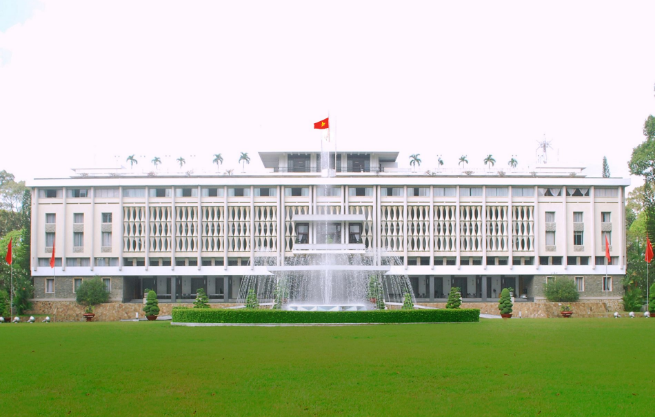Panorama of the Independence Palace, a place to visit in mysterious Saigon
About the Independence Palace
Independence Palace also has two other names, Reunification Palace and Reunification Hall, formerly the residence and workplace of the President of the Republic of Vietnam. In 2009, this place was officially ranked as one of the first 10 special national monuments of the country.
The image of the Independence Palace during the fierce war
The palace was built on the design of architect Ngo Viet Thu, including 3 main floors, 1 terrace, 2 mezzanines, ground floor, 2 basements and a terrace for helicopters to land. In the palace, there are more than 100 rooms with different decorations depending on the purpose of use such as state rooms, Cabinet meeting rooms, banquet rooms, presentation rooms, entertainment rooms, cinema rooms, and galleries. …
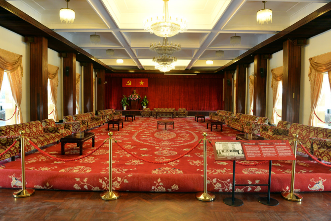Picture of the stateroom inside the Independence Palace
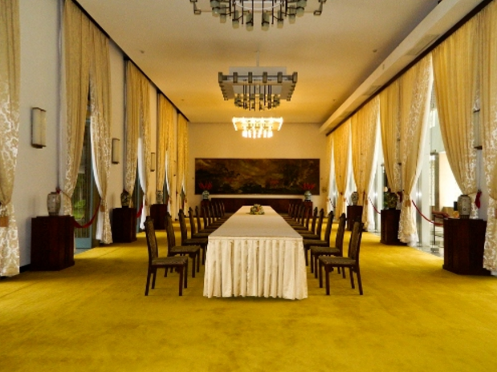Architecture of the banquet hall in the Independence Palace
Road to Independence Palace
Address of Independence Palace: 135 Nam Ky Khoi Nghia, District 1, District 1, Ho Chi Minh City In addition to walking or going by motorbike or taxi to get here, visitors from many different destinations can go by bus. There are 5 bus routes as follows:
- Ben Thanh - Cho Lon bus station
- Ben Thanh - Western bus station
- Ben Thanh – Thanh Loc
- Ben Thanh - Cong Hoa - An Suong bus station
- Cho Lon bus station – Bien Hoa
Information on opening hours and entrance fees
Palace opening hours: The Independence Palace historical site is open to sell tickets for daily visitors (including weekends and holidays and New Year's Eve).
Morning: 7:30 am - 11:00 am
Afternoon: 13h00' - 16h00'
Ticket price to the Independence Palace:
Adults: 40,000VND/1 person/1 turn
Student: 20,000VND/1 person/1 turn
Students (6 years old to 17 years old): 10,000VND/1 person/1 turn
What does the Doc Dam Palace have?
The Palace is divided into 3 main exhibition areas: the fixed area , the thematic area and the additional area.
1.Fixed Zone
It includes the state hall, banquet room, cabinet room, national security council room; the president's living room, the president's office, the vice president's office of the Republic of Vietnam, the vice president's living room, the credential presentation room, the bedroom of the president's family, the living area, Lady's living room, cinema room, entertainment room, retreat floor, operational staff room, communication room, President's duty room, kitchen, Jeep, F5E aircraft, tank 390 , tank 843.
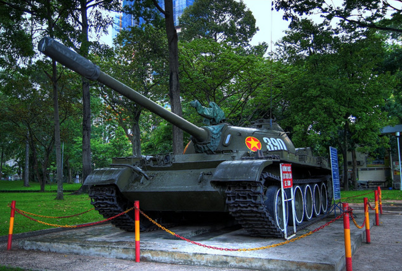Tank 390 on display (photo ST)
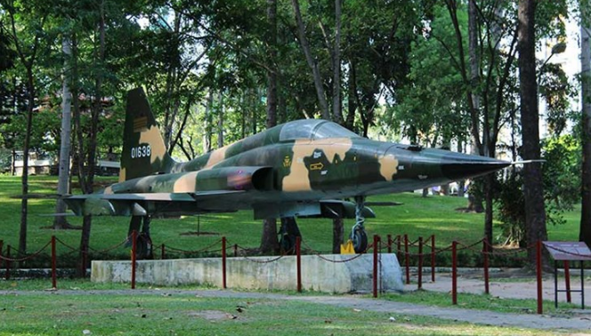Airplane f5e
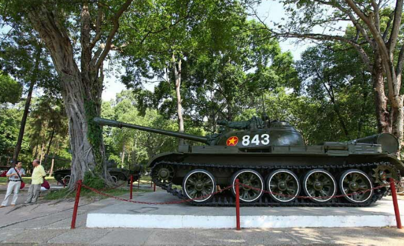Tank 843
The vivid relics are kept until now so that future generations can see with their own eyes, observe and understand part of a heroic and fierce war period.
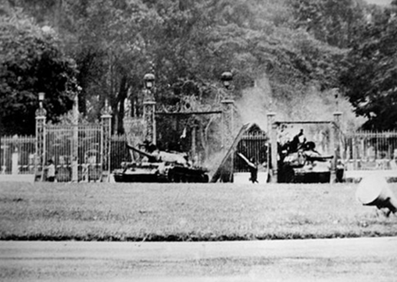The brutal war period at the Independence Palace in Ho Chi Minh City
2.Thematic area
It is an exhibition area for topics such as "From the Paris Agreement to the Ho Chi Minh campaign through reserve documents", "Ho Chi Minh Road through documents of the Saigon government" or photo exhibitions such as " Vietnam – Song of Victory”.
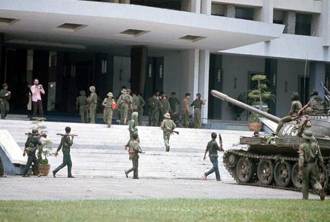Independence Palace victory day
Visitors can not only look back at the vivid photographs of the past period, but also learn more and learn more about the historical details hidden in it that are not written by any books. These are the collections, the labors of research and deepening of the historical experts.
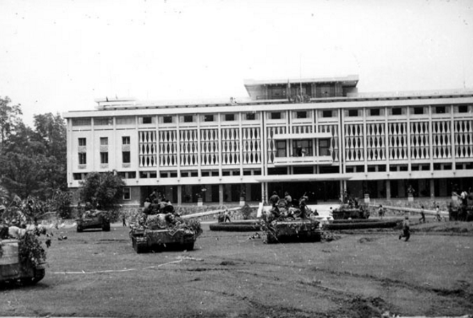The heroic scene of the Independence Palace on April 30, 1975
3.Additional Zone
It is the gallery where the photos were found and collected later. The photos were kept by the people from the resistance wars to independence and sent to the relic to preserve and pass on to future generations.
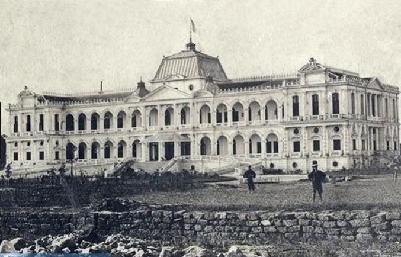A photo of the Independence Palace in the past
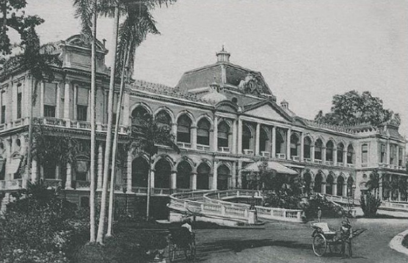Independence Palace in the 1960s
Previous generations look back on their heroic times, and later generations can feel the glorious resistance and the joy of victory that our ancestors won to make an effort to contribute a part of their efforts to building. and protect the peace and prosperity of the Fatherland. In addition to visiting the main area, visitors can take a walk outside the palace grounds with green lawns and see the Palace from many angles.
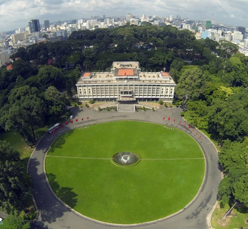Panorama of the Independence Palace campus in Saigon
Note to visit the Independence Palace
Because this is a place bearing the heroic history of a nation, so you need to pay attention to dress before coming here. In addition, should strictly follow the rules of sightseeing of the management board of the relic site.
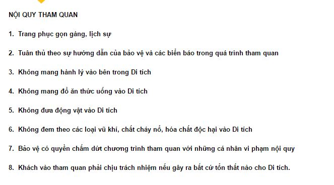Rules for visiting the Independence Palace
Independence Palace is not only a heroic symbol of Saigon but also the pride of the Vietnamese people. Exploring this historic site is sure to be a memorable experience. In particular, this will be a treasure for History "believers" to explore freely.
Related posts